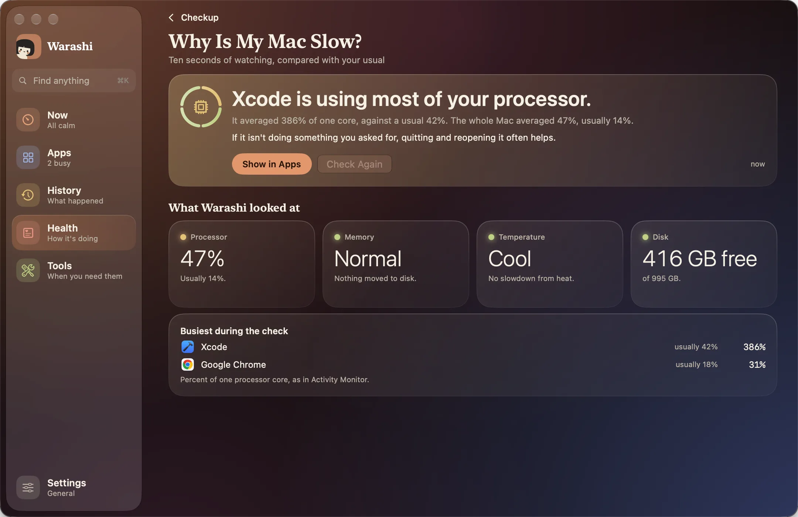

الفحص هو أول تبويب في الصحة (⌘4). ينظر في الأسبوع الأخير ويجيب عن سؤال واحد: هل Mac لديك بحال جيدة؟


الحكم
في الأعلى: Mac لديك بحال جيدة.، أو ما يستحق النظر بكلمات بسيطة. وبجانبه حلقة فيها جزء لكل ما جرى فحصه، بلونه الخاص: أخضر إن كان سليمًا، وكهرماني إن استحق النظر، ورمادي إن تعذّرت قراءته. يُحسب من قياسات Warashi خلال الأسبوع الأخير، ويُحدَّث كل بضع دقائق.
ما ينظر فيه
| بطاقة | ما يعرضه | عندما يطلب منك أن تنظر |
|---|---|---|
| البطارية | الشحن والصحة والدورات والحالة، وحد الشحن بجانبها مباشرة | الصحة دون 85%؛ وتصرّف دون 80% |
| التخزين | المساحة الحرة وما يملأ قرصك، من آخر فحص للتخزين | أقل من 15% حرة؛ تصرّف عند أقل من 10 GB |
| الذاكرة | كم من الأسبوع كان Mac لديك يعاني نقص الذاكرة | ثلث الأسبوع أو أكثر |
| الحرارة | كم من الأسبوع أبطأ macOS جهاز Mac لديك ليبرّده | 2% من الأسبوع أو أكثر |
| صحة القرص | كم استُهلك من العمر المقدّر لقرص SSD لديك | 70% أو أكثر، أو أي أخطاء |
| الأقراص الخارجية | الأمر نفسه لكل قرص متصل يبلّغ عن صحته | 70% أو أكثر، أو أي أخطاء |
اضغط الذاكرة لترى التطبيقات التي تستخدمها، أو الحرارة لترى سجلّها، أو فتح في التخزين.
لماذا جهاز Mac بطيء؟
قد يبدو الأسبوع بخير بينما الجهاز بطيء الآن. اضغط أشعر بالبطء؟ بجانب الحكم، أو اكتب «بطيء» في البحث عن أي شيء، ثم تابع فعل ما بدا بطيئًا. يراقب Warashi عشر ثوانٍ، ويقارن ما يراه بأسبوع جهازك المعتاد، ويسمّي السبب الأرجح، مع أرقامه وشيء واحد تفعله:
- الحرارة: يُبطئ macOS الـ Mac لتبريده.
- الذاكرة: الـ Mac قليل الذاكرة وينقلها إلى القرص، مع التطبيقات التي تحتفظ بأكبر قدر منها.
- تطبيق واحد: تطبيق واحد يستخدم معظم المعالج، مقارنة بمستواه المعتاد. إظهار في التطبيقات يفتحه.
- عمل macOS نفسه: فهرسة Spotlight، أو نسخ Time Machine الاحتياطي، أو تحليل الصور لمكتبتك، أو تحديث قيد التحضير. وهذه تنتهي من تلقاء نفسها.
- تطبيقات كثيرة في وقت واحد، أو قرص شبه ممتلئ أو وضع الطاقة المنخفضة.
- لا شيء: إن لم يبرز شيء، يقول ذلك، مع الأرقام التي رآها. بطء موقع ويب أرجح أن يكون من اتصالك، لذا يقترح اختبار سرعة.


تحت الإجابة، يعرض ما نظر فيه Warashi المعالج والذاكرة والحرارة والقرص، وأكثر التطبيقات نشاطًا أثناء الفحص. ولا يُسجَّل شيء فوق سجلك المعتاد.
الأمان والنسخ الاحتياطي
تعرض تسعة مربعات مدى حماية Mac لديك. اضغط أحدها لتفتح المكان في إعدادات النظام الذي يُغيَّر منه.


| بطاقة | ما يعرضه | عندما يطلب منك أن تنظر |
|---|---|---|
| تحديثات macOS | هل ينتظر تحديث macOS، ومتى تحقق macOS آخر مرة | تحديث جاهز للتثبيت |
| Time Machine | متى أخذ جهاز Mac آخر نسخة احتياطية، وعلى أي قرص | غير مُعدّ، أو لا نسخة احتياطية منذ أسبوع |
| FileVault | هل ملفاتك مشفّرة | متوقف |
| جدار الحماية | هل تُحجب الاتصالات الواردة غير المرغوب فيها | متوقف |
| حماية سلامة النظام | هل ملفات macOS الأساسية محمية | متوقف |
| Gatekeeper | هل تُفحص التطبيقات قبل أن تُفتح أول مرة | متوقف |
| الحماية من البرامج الضارة | XProtect، الحماية من البرمجيات الخبيثة المدمجة في macOS: إصدار تعريفاته ومتى حدّثتها Apple آخر مرة. اضغطه، ثم فحص التطبيقات، لفحص توقيع كل تطبيق وعنصر تسجيل دخول على جهاز Mac: يُسرد أي شيء لم يوقّعه مطوّر معروف أو تغيّر بعد التوقيع، مع ما تفعله | لا تحديث منذ شهر، أي أن الاستجابات الأمنية لا تصل إلى هذا Mac |
| اللقطات المحلية | كم نسخة يحتفظ بها Time Machine على القرص نفسه، وأقدمها. يزيلها macOS من تلقاء نفسه حين تضيق المساحة؛ اضغطها ثم تحرير المساحة ليزيلها macOS الآن. لا يُمسّ قرص النسخ الاحتياطي | أبدًا: إنها طبيعية |
| أذونات التطبيقات | قائمة بصفحات الخصوصية في إعدادات النظام (الكاميرا، والميكروفون، وتسجيل الشاشة، والوصول الكامل إلى القرص وغيرها)، كل منها على بُعد نقرة | أبدًا: إنه دليل |
يسأل Warashi أدوات macOS نفسه عند فتح الفحص، ولا يغيّر شيئًا إلا عندما تطلب. ورؤية تاريخ آخر نسخة احتياطية تحتاج إلى الوصول الكامل إلى القرص.
لتُبلَّغ دون فتح الفحص، فعّل نسخة احتياطية متأخرة وتحديث macOS ينتظر في الإعدادات › التنبيهات. وما دام أحدهما مفعّلًا، يقرأ Warashi ذلك مرة في اليوم ويخبرك مرة واحدة: عندما لا يأخذ Time Machine نسخة احتياطية منذ أسبوع، وعندما ينتظر تحديث منذ أسبوع.
Homebrew
إن كنت تستخدم Homebrew، يعرض الفحص كم من حزمك لها إصدار أحدث، مع أول بضع حزم وإصداراتها، وكم عمر قائمة Homebrew نفسها (فهي بحداثة آخر brew update لك). ينسخ نسخ أمر التحديث الأمر brew update && brew upgrade لـ Terminal، لأن الترقية قد تطول وتطلب كلمة السر. ويعرض الإصدارات والتنزيلات القديمة ما سيحرره brew cleanup، ويشغّله تنظيف… بعد تأكيدك. يسأل Warashi منصة Homebrew وتحديثها التلقائي مُوقَف، فلا شيء يتصل بالإنترنت.
يبدأ مع جهاز Mac
تحته كل ما ثبّت نفسه ليبدأ مع Mac، الأكثر كلفة أولًا، مع الطاقة التي استهلكها كل منها هذا الأسبوع. يأخذك فتح عناصر تسجيل الدخول إلى إعدادات النظام لإيقاف أيٍّ منها.